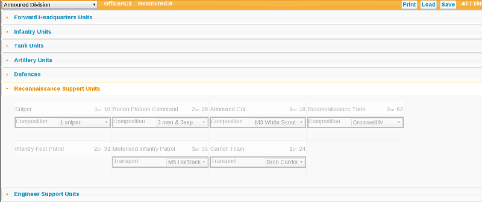

Choose which nationality and army list you'll be using from the drop-down menu in the top-left.
Select units for your force by clicking on them. When selected they will be highlighted.
The units BR value and point cost is displayed in the top-right of the unit box. When a unit is selected its point and BR values are added to the over-all force point and BR totals. These totals can be seen in the top-right of the scren.
If a unit is not 'unique' then when selected another available but un-selected unit entry will be be displayed. This allows you to choose multiple copies on non-unique units if you wish.
To swap between support sections, eg Infantry, HQ etc., click on the title of the support section that you want displayed.
Many units have options in the weapons they carry, their transport, or other such variables.
To change unit options, select from the various unit drop-down boxes. These options will often affect the points or BR values of units as well as the final look of the printable roster.
Units in some sections, such as 'reconnaissance' and 'Logistics', may only be selected once you have met their requirements by choosing units from other sections such as 'HQ' or 'Infantry'.
Until you meet their requirements these support sections will be faded out and you will not be able to choose units from them. So choose some 'HQ', 'Infantry', 'Tanks' or 'Artillery' units first.

When you're happy with your completed Battle Group list, select the 'Print' button in the top right of the screen. The display will switch to a printable roster, which you may print as normal using your web-browser.
To return to the edit screen click on any of the text in the print screen.
Spaces are left on the printable roster to write in weapon and vehicle stats. Space is also provided for tracking the ammo of included vehicles.
Click on the 'Save' button in the top-right of the edit screen to save your Battle Group. A string of letters and numbers will be displayed that represents your Battle Group list. Copy & paste this to a suitable location for later loading.
To ease sharing and loading of saved lists, the save screen also provides a web-link to your saved Battle Group. Right-click on this in your browser and select 'Copy Link Address' (or your own browser's equivalent). You may then paste this into web-forums or emails for ease of sharing with friends.
You may prefer to save this web-link rather than just the save-string as you will then be able to load saved Battle Groups simply by clicking on the saved link.
Click on the 'Load' button in the top-right of the edit screen to load a Battle Group. Copy & Paste (or type) your Battle Group's save text into the dialog and press 'OK'.
Alternatively, simply open the saved web-link in a web-browser and it will automatically load the Battle Group. Many email-clients and word-processors will open web-links, so loading this way can be quicker and easier than copying & pasting in the Battle Group save codes.
The Battle Group builder will track the number of officers in your Battle Group. This is displayed at the top of the edit screen and is also printed on your roster.
Restricted unit choices are also tracked and displayed at the top of the edit screen. These are not however enforced by Battle Group builder.